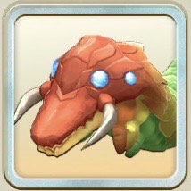

ハナシャクトリ

お楽しみガチャ限定ハナシャクトリ
緑オーラ
怪物
お楽しみガチャ限定
主血統ワーム
副血統プラント
基礎データ
素質
ライフ+15%
ちから-5%
かしこさ+10%
命中0%
回避0%
丈夫さ0%
- 素質合計
- +20%
- 最高素質
- ライフ +15%
特徴
ガッツ回復力C
移動速度F
成長タイプ早熟
ヨイワルヨイ
サイズ小さい
適性データ
地形適性
砂漠D
森林B
海岸E
雪山D
火山F
- 得意（B以上）
- 森林B
- 苦手（D以下）
- 砂漠D・海岸E・雪山D・火山F
間合い適性
遠C
中D
近C
零C
- 得意（B以上）
- なし
- 苦手（D以下）
- 中D
適性評価は当サイト独自の指標です。B以上は育成でSに届く適性、D以下はSに届きにくい適性として、高いランクを少し重く見て5.0満点で算出しています。
相性のいいアシスト能力
オフリアボイド IIはブロックで被ダメを減らす能力。ライフの素質+15%のハナシャクトリなら強く使える。ハナシャクトリはかしこさの素質が高い（+10%）ので、攻撃ステを上げる俺が仕留める IIを活かしやすい。
-
デコレートマジック II
[怪物]オーラ技命中時、次の効果
[業物Lv5]
与ガッツダメージ分ガッツ吸収<消費ガッツ50%まで>
[有利]クリティカル時、ガッツダメ<+30%> -
ルピナスリカバー II
[自身緑または獣族]バトル開始時、回避ステ<+400>、技回避時、次の効果
[前半]ガッツ回復<+30><1回>
[後半]ガッツ回復<+40><1回> -
夜空を舞う夢 II
[自身緑]<オーラ>技発動時、自身に[怒]を<1>スタック
[怒]のスタックが<3>になる時、<2>消費して必中Lv1かつクリティカル確定 -
オフリアボイド II
[怪物]<相手オーラ>技発動時、完全回避Lv2<1回>
さらに、被ダメブロックLv2<20秒><1回> - ▲ ライフの素質+15%は、ブロックで被ダメを減らすこの能力と好相性。割合で減らすので、ライフが多いほど長く耐えられる。
-
俺が仕留める II
[自身緑]<オーラ緑>技発動時、発動技と次の技が必中Lv1
さらにクリティカル発生時、攻撃ステータス10%上昇<1回> - ▲ この能力は攻撃ステを上げる。かしこさの素質+10%で伸びやすく、効果を活かしやすい。
※新しいカードの能力から並べています。
評価解説
カラフルな見た目でファームを彩る☆3モンスター。見ていて心も華やかになる。花だけに。
ガッツ回復力Cと(ワーム種の中では)早く戦いやすい。
ランク4・5の登録技が強力で、ワーム種の強化にも是非欲しいモンスター。
ランク4・5技登録には☆5強化が必須なので、複数回引き当てるorハートを頑張ってかき集めよう。
「週末限定お楽しみガチャ」または
お楽しみメダル交換所→「お楽しみカタログ円盤石」から入手可能。（他に入手方法はないので注意）